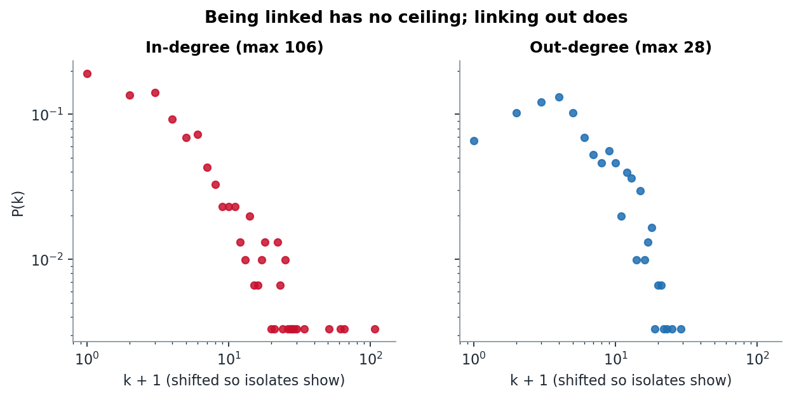
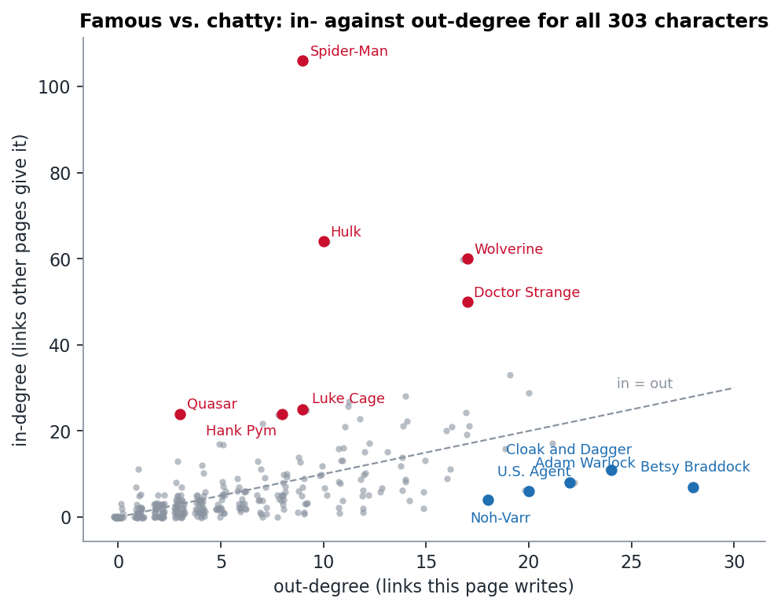
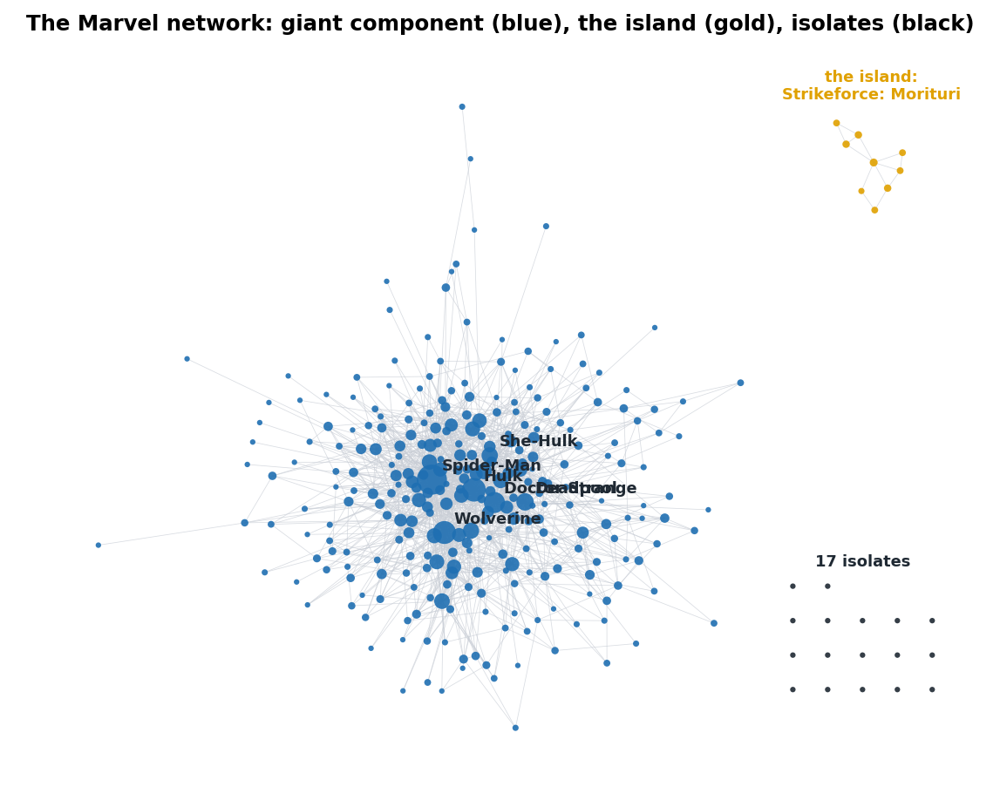

Week 1 · Networks
Famous is not the same as chatty
In the Marvel network, the characters everyone links to and the characters who link to everyone are almost entirely different people. And 26 heroes are not connected to the rest at all.
The question
Every edge in the Marvel network is a decision someone made. If page A links to page B, an editor of A decided that B was worth mentioning. That means the two ends of an edge mean different things:
- In-degree is conferred. Other pages decide you matter.
- Out-degree is authored. Your own page decides who matters to you.
So we asked: are the famous characters (high in-degree) also the chatty ones (high out-degree)? And who is left out of the conversation entirely?
The network in numbers
We loaded the week-1 snapshot with every node added first, so the isolates survive:
| characters | 303 |
| directed links | 1,784 |
| undirected pairs | 1,434 (350 of them link both ways) |
| average degree ⟨k⟩ = 2m/n | 9.47 |
| density | 0.031 |
The 1,784 directed links collapse to 1,434 pairs because 350 pairs link in both directions, and each of those counts twice as directed edges but once as a pair.
Two distributions, two mechanisms

The in-degree tail runs all the way to Spider-Man at 106, which means 35% of the whole network links to him. The out-degree tail stops at 28 (Betsy Braddock). This matches the in/out split above. An out-link has to be written into one article by hand, so there is a ceiling on how many a page will have. In-links are handed out by everyone else, and nothing stops them from piling up on one page.
Famous vs. chatty

The two degrees are only moderately correlated (r = 0.50). The outliers on each side are different kinds of character:
| Linked to a lot, links out little | in | out | Links out a lot, rarely linked | in | out |
|---|---|---|---|---|---|
| Spider-Man | 106 | 9 | Betsy Braddock | 7 | 28 |
| Hulk | 64 | 10 | Cloak and Dagger | 11 | 24 |
| Wolverine | 60 | 17 | Adam Warlock | 8 | 22 |
| Quasar | 24 | 3 | U.S. Agent | 6 | 20 |
| Hank Pym | 24 | 8 | Noh-Varr | 4 | 18 |
What surprised us: Spider-Man's page is long (about 10,000 words), yet it links to only nine other characters in the category: Black Cat, Hulk, Mayday Parker, Scarlet Spider, Silk, Spider-Man Noir, Spider-UK, Spider-Woman (Gwen Stacy) and Venom. Almost all of them are spin-offs of Spider-Man himself. All nine link back to him. The most famous page in the network is mostly talking to its own family.
Betsy Braddock goes the other way. Her page (about 12,800 words) runs through decades of X-Men team-ups and links 28 characters, including Cyclops, Jean Grey, Storm, Wolverine and her twin brother Brian. Only seven pages link back. Team-book characters seem to have long, crowded biographies that name everyone they ever fought alongside.
Quasar is odd (24 in, 3 out). We will come back to him in week 5.
Who is left out

- 277 characters (91%) sit in one giant connected component.
- 9 characters form a single island: Backhand, Blackthorn, Radian, Scaredycat, Scatterbrain, Shear, Snapdragon, Toxyn and Vyking. Every one of them has the same one-line blurb ("is a superhero appearing in American comic books published by Marvel Comics"). Their page titles give them away: they are the cast of Strikeforce: Morituri, a 1980s series. They link only to each other.
- 17 isolates, including Baymax, Miracleman and Yo-Yo Rodriguez, have no links in either direction.
- 58 characters have in-degree zero, and 41 of those still link out. They talk, but nobody in the category talks back.
What we checked
- That the edge counts match the course page (303 / 1,784 / 1,434 / ⟨k⟩ ≈ 9.5). They do.
- That the agent's top-five lists match a hand count. We read Spider-Man's nine out-links straight off the edge list and checked them against his article.
Limitation
"Famous" here means famous inside one Wikipedia category. Characters like Iron Man, Captain America and Thor are not in Category:Marvel Comics superheroes in this snapshot, so every link to them is invisible. Spider-Man's 106 may partly reflect who happened to be filed in the category.